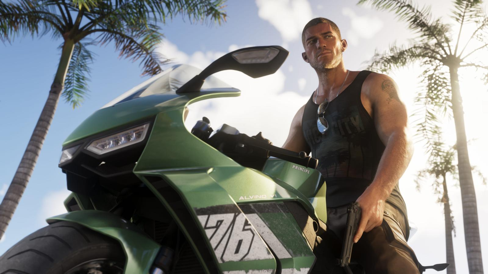
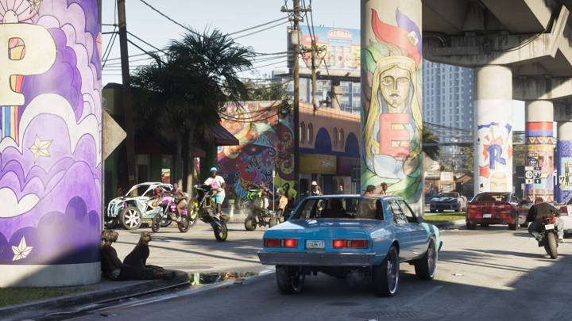
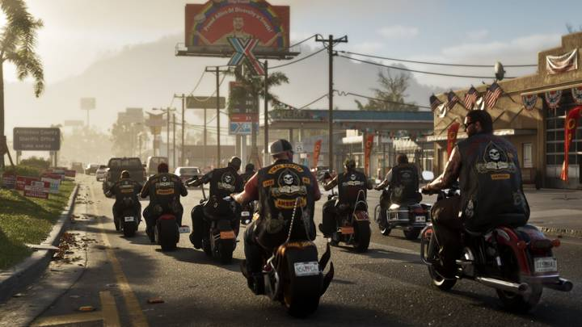
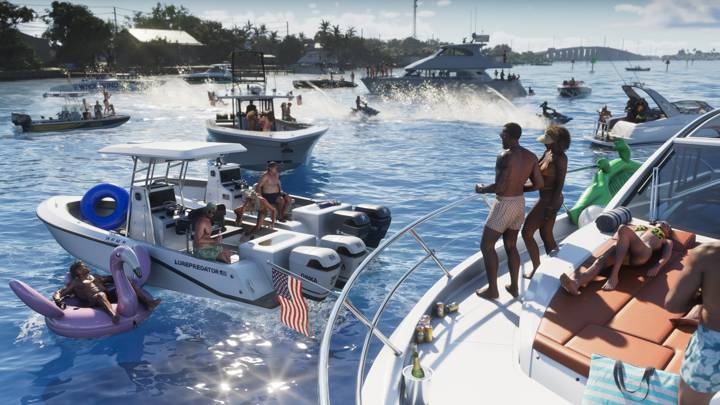
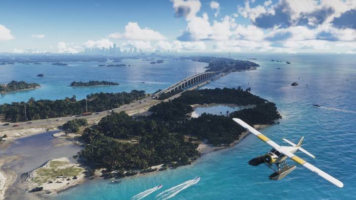
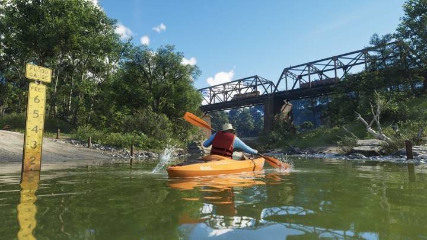
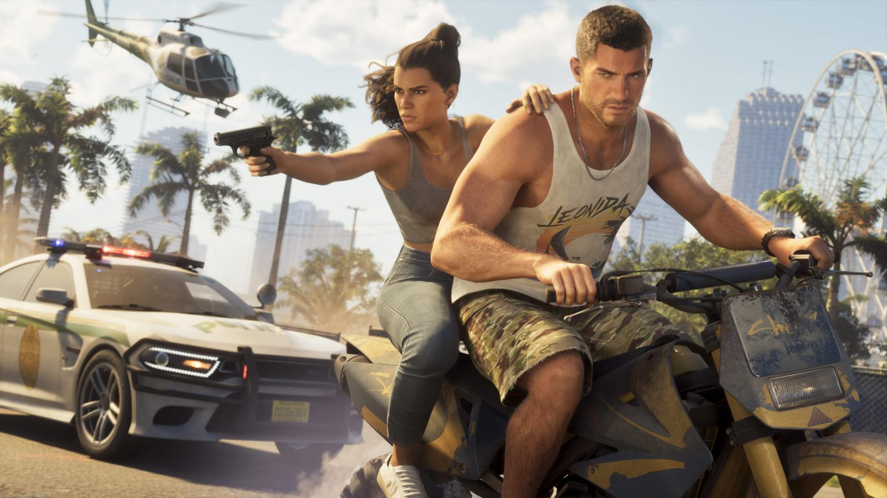

Транспорт в GTA 6: что показала Rockstar
Обновлено: 24.09.2026

- На официальных кадрах: машины, мотоциклы, лодки, вертолёт, гидроплан, каяк.
- Физику вождения, по данным превью, переделали.
- Полный каталог моделей — после релиза.
Какой транспорт показан

Машины
Легковые автомобили, спорткары, полицейские машины — на улицах Вайс-Сити и трассах Леониды.

Мотоциклы
Спортивные байки, чопперы байкеров Ambrosia, кроссовые мотоциклы.

Лодки и яхты
Катера и яхты у островов Leonida Keys.

Авиация
Гидроплан над Кис и вертолёт над Mount Kalaga.

Каяк
Каяки на реках национального парка Mount Kalaga.
Вождение
По данным превью, физику вождения переработали: машины стали «тяжелее», как в GTA 4, но управление осталось доступным, как в GTA 5. У транспорта есть топливо и разный объём багажника. Подробнее — Угон и топливо в GTA 6.

Источники: Rockstar Games — официальный сайт GTA VI (rockstargames.com/VI), Rockstar Newswire; превью журналистов и официальный геймплейный ролик Rockstar (по данным GTABase, VICE).